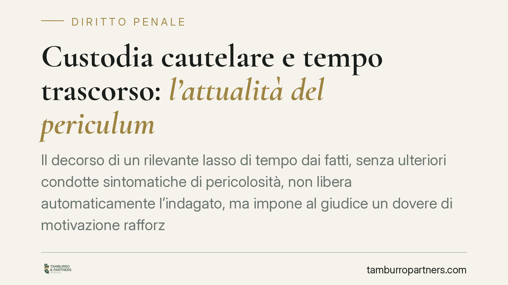

Custodia cautelare e tempo trascorso: l'attualità del periculum
Il decorso di un rilevante lasso di tempo dai fatti, senza ulteriori condotte sintomatiche di pericolosità, non libera automaticamente l'indagato, ma impone al giudice un dovere di motivazione rafforzata sull'attualità del pericolo. È un principio consolidato in Cassazione che incide sulla tenuta delle misure cautelari e che merita di essere letto nel suo esatto perimetro.

Il principio in sintesi
La libertà personale è la regola; la custodia cautelare è l'eccezione. Quando però tra i fatti contestati e il provvedimento cautelare intercorre un lungo periodo, durante il quale la persona non ha tenuto condotte nuove sintomatiche di pericolosità, sorge un problema: il pericolo che giustifica la misura è ancora *attuale*?
La risposta della giurisprudenza di legittimità è netta nel metodo. Il tempo trascorso non determina la liberazione automatica, ma onera il giudice di una motivazione specifica e rafforzata sull'attualità delle esigenze cautelari. Non basta richiamare la gravità astratta del reato: occorre spiegare perché, *oggi*, il pericolo persiste.
Nota di verifica. La notizia di stampa richiama una pronuncia (Cass. Sez. I, n. 35195/2026) di cui non è stato possibile confermare gli estremi. Per correttezza la segnaliamo come dato da verificare e non la assumiamo a fondamento del presente contributo. Il principio esposto trova comunque riscontro in un orientamento consolidato della Cassazione in tema di attualità del *periculum libertatis*.
Inquadramento normativo
L'art. 274 c.p.p. individua le tre esigenze cautelari: pericolo di inquinamento probatorio (lett. a), pericolo di fuga (lett. b), pericolo di reiterazione del reato (lett. c). Per le lettere b) e c) la legge richiede espressamente che il pericolo sia non solo concreto ma attuale, requisito introdotto e rafforzato dalla riforma della l. 47/2015.
Discorso distinto per l'art. 275, comma 3, c.p.p., che prevede una presunzione di adeguatezza della sola custodia in carcere. Qui è necessario un chiarimento spesso trascurato: dopo gli interventi della Corte costituzionale – in particolare le sentenze n. 265/2010 e n. 57/2013 – la presunzione *assoluta* sopravvive oggi per un catalogo ristretto di reati, tipicamente l'associazione di tipo mafioso. Per gli altri delitti già inclusi nel comma 3 la presunzione è divenuta *relativa*: ammette cioè la prova che esigenze cautelari possano essere soddisfatte con misure meno afflittive. Parlare di un regime presuntivo ampio e indifferenziato è dunque errato.
Come il tempo incide su ciascuna esigenza
Il decorso del tempo non pesa allo stesso modo sulle tre esigenze.
- Inquinamento probatorio: tende a esaurirsi con la cristallizzazione delle prove. A indagini avanzate, il pericolo che l'indagato alteri le fonti si affievolisce fisiologicamente.
- Pericolo di fuga: va valutato in concreto. Il tempo trascorso senza condotte di sottrazione, unito a stabilità lavorativa e familiare, erode la base del pericolo.
- Reiterazione del reato: è l'esigenza su cui il tempo incide in modo più delicato. Un periodo prolungato di condotta incensurabile può segnalare un mutamento della pericolosità, che il giudice deve valutare espressamente.
Implicazioni pratiche
Per chi si trova sottoposto a misura cautelare, o rischia di esserlo a distanza di anni dai fatti, il principio ha ricadute concrete.
Il punto non è ottenere una scarcerazione automatica – che non esiste – ma costringere il giudice a confrontarsi con la situazione reale e aggiornata della persona. Una motivazione che si limiti a richiamare la gravità del reato o la risalenza del titolo, senza dar conto dell'attualità del pericolo, è censurabile in sede di riesame e in Cassazione per vizio di motivazione.
Cosa fare in concreto
- Documentate il tempo e la condotta successiva: raccogliete prova dell'assenza di nuove condotte rilevanti e del percorso personale, lavorativo e familiare intervenuto dai fatti.
- Isolate l'esigenza cautelare concreta: verificate su quale delle tre esigenze (artt. 274 c.p.p.) si regge la misura, perché il tempo incide diversamente su ciascuna.
- Contestate la motivazione, non solo il merito: nel riesame o nell'appello cautelare puntate sul difetto di motivazione specifica sull'attualità del pericolo.
- Valutate l'istanza di sostituzione o revoca (artt. 299 c.p.p.) quando emergono fatti nuovi che attenuano le esigenze cautelari.
- Agite con tempestività: i termini per il riesame sono brevi e perentori; consigliamo di attivarsi subito con un difensore.
Un monito di sistema
La libertà personale è una garanzia costituzionale, non una concessione. L'obbligo di motivazione rafforzata sull'attualità del pericolo è lo strumento con cui l'ordinamento impedisce che la cautela si trasformi in anticipazione della pena. Comprenderne i limiti – motivazione sì, liberazione automatica no – è la premessa per difendersi in modo efficace.
*Contributo informativo a cura di Tamburro & Partners - Avv. Giuseppe Tamburro. Non costituisce parere legale.*
Ogni condominio ha una storia a sé.
Se gestisci un'amministrazione e vuoi un confronto su una specifica questione condominiale, scrivi allo studio. Ti rispondiamo entro un giorno lavorativo.